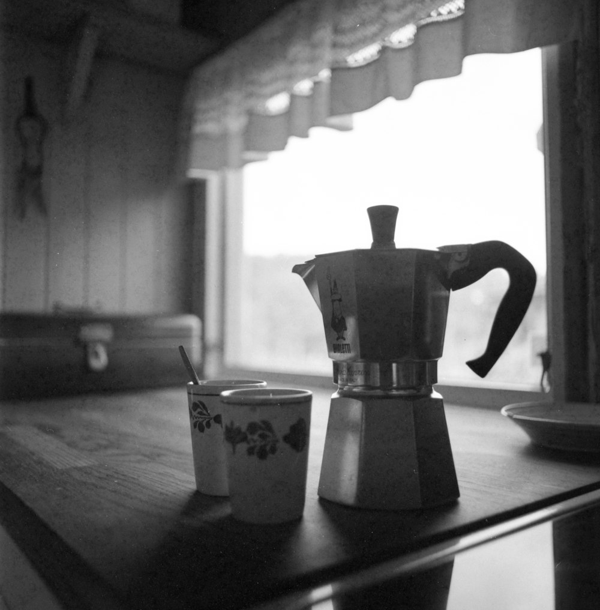

OneTab, Session Buddy, Toby, Workona and Simmer compared
Short answer
They differ in who does the sorting and where your tabs are kept. OneTab and Session Buddy save tabs as lists and sessions, free and on your computer. Toby and Workona give you boards and workspaces that you fill yourself, kept in an account that syncs between computers. Simmer works out the tasks behind your open tabs for you and brings a whole task back in one click, free and with no account. If you need your tabs on several computers, pick Toby or Workona; if you want them sorted for you without an account, pick Simmer.

We make Simmer, so read this with that in mind. We've kept to what each extension says about itself, checked in November 2026. Plans and prices change, so check each one's own site before you choose.
At a glance
| Extension | Who sorts the tabs | Account | Where tabs are kept | Price |
|---|---|---|---|---|
| Simmer | Simmer finds the tasks itself | No | In Chrome on your computer | Free |
| OneTab | You send a window's tabs to one list, then group them by hand | Only for sync | On your computer, with optional encrypted sync | Free |
| Session Buddy | You save sessions and windows, then name and edit them | No | On your computer | Free |
| Toby | You drag tabs into collections on a board | Yes | In your Toby account, synced | Free plan with limits; paid plans |
| Workona | You make a space for each project and move tabs into it | Yes | In your Workona account, synced | Free plan with limits; paid plans |
| Chrome tab groups | You group tabs by hand | Only for sync | In Chrome; saved groups sync with your Google account | Built in |
OneTab: one list for a whole window
Click OneTab's button and every tab in the window closes into a single list, grouped by when you sent it. You can name groups, move tabs between them and restore one tab or a whole group. It is quick when you want a clean window right now; the list is yours to sort. OneTab also offers sync between devices with end-to-end encryption. one-tab.com
Session Buddy: sessions you can restore
Session Buddy saves whole sessions, every window and tab, and saves them on its own as you browse, so you can get back what you had before a crash. It searches open tabs, saved collections and history together, and imports and exports in many formats. It is free, needs no account and keeps everything on your computer, without sync. sessionbuddy.com
Toby: boards of collections
Toby replaces the new tab page with a board of collections. You drag tabs into them, or save a whole window as one, and open a collection's tabs together. Collections can be shared with a team. It needs an account, which syncs your collections between computers, and paid plans lift the free plan's limits. gettoby.com
Workona: a workspace for each project
Workona puts your browsing into spaces, which work like named windows: one per project, each with its own tabs and documents. Switching spaces swaps the tabs in your window. It suits people who juggle several projects in web apps, and it asks you to work in its spaces. It needs an account, which syncs your spaces; paid plans add more spaces and features. workona.com
Chrome's own tab groups
Built into Chrome: right-click a tab, add it to a group, name and colour the group, and collapse it. A saved group can be closed and reopened from the bookmarks bar, and saved groups sync if you sign in to Chrome. Every tab is sorted by hand.
Simmer: tasks found for you
Simmer starts from the tabs you already have. It works out which belong together from what opened what, your tab groups, and a small model that compares tab titles on your computer, in English and Japanese. You get a short list of what you're in the middle of. Put a task on the back burner and its tabs are saved and close; Bring back reopens every one, in its group. Mail, chat and calendars stay open, and everything it does can be undone.
What it doesn't do: it has no sync of its own and no shared collections, and it is built for Chrome on desktop. If you choose to save put-away tabs to your bookmarks, those sync wherever Chrome syncs bookmarks.
Which to pick
- You want a clean window in one click and will sort later: OneTab.
- You want every window back after a crash or restart: Session Buddy.
- You think in boards and share links with a team: Toby.
- You run several projects and want a workspace for each: Workona.
- You want your tabs sorted for you, with no account: Simmer.
Questions
- Which tab manager for Chrome doesn't need an account?
- OneTab, Session Buddy and Simmer work without an account. Toby and Workona need one, which is how they sync between computers.
- What is a free alternative to OneTab?
- Session Buddy and Simmer are both free and need no account. Session Buddy saves and restores whole sessions; Simmer sorts your open tabs into tasks for you and brings a whole task back in one click.
- Which tab manager sorts tabs automatically?
- Simmer works out which tabs belong together on its own, from what opened what, your tab groups and the tab titles. Toby also has a paid option that groups tabs for you. OneTab, Session Buddy and Workona leave the sorting to you.
- Can Simmer sync tabs between computers?
- Not by itself. What Simmer saves stays on the computer where you saved it. If you also save put-away tabs to bookmarks, those sync with Chrome's bookmark sync.